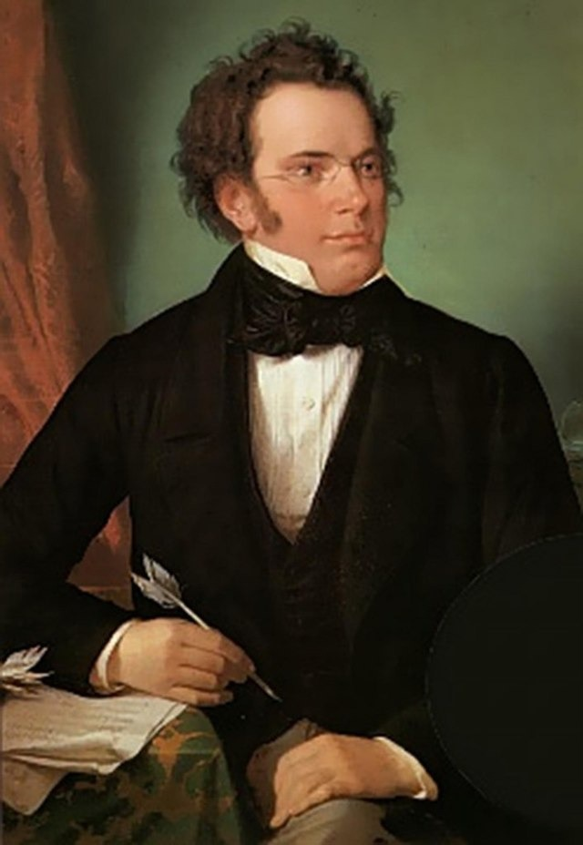

A continuación, les presento en modo de lista, mis canciones favoritas:
Standchen D. 954 No. 4, Franz Schubert - Barbara Hendricks & Radu Lupu
Posthumous Nocturne in C Sharp Minor No. 20, Frederic Chopin - Angele Dubeau
Grandes Études de Paganini S. 141: No. 3 in G-Sharp Minor “La Campanella), Franz Liszt Valentina Lisitsa
Hungarian Rhapsody No. 2 in C-Sharp Minor S. 244, Franz Liszt - Henrik Mawe
Bistro Fada (rom the motion Picture “Midnight in Paris), Stephane Wrembel
Mis obras literarias favoritas
Ahora les presento que, desde mi punto de vista son las obras literarias que me encantan y que sin dudarlo, recomiendo leer:
Sapiens, Yuval Noah Harari
Homodeus, Yuval Noah Harari
21 lecciones para el siglo XXI, Yuval Noah Harari
LA VERDAD SOBRE EL CASO HARRY QUEBERT, Joel Dicker
EL LIBRO DE LOS BALTIMORE, Joel Dicker
Más información sobre los libros
Para ahondar más sobre los títulos literarios, acontinuación, se muestra la sinopsis de cada uno de ellos:
Sapiens, Yuval Noah Harari
En Sapiens, Yuval Noah Harari traza una breve historia de la humanidad, desde los primeros humanos que caminaron sobre la Tierra hasta los radicales y a veces devastadores avances de las tres grandes revoluciones que nuestra especie ha protagonizado: la cognitiva, la agrícola y la científica.
Homodeus, Yuval Noah Harari
"Homo Deus" presenta una visión del futuro, un futuro en el que la tecnología crece exponencialmente e impacta en las estructuras sociales, revolucionando la vida. La biotecnología, la inteligencia artificial y la nanotecnología permitirán extender la vida humana.
21 lecciones para el siglo XXI, Yuval Noah Harari
"21 lecciones para el siglo XXI” recoge reflexiones sobre los retos a los que se enfrentará el mundo en el futuro: la disrupción tecnológica, el auge de las plataformas digitales y los algoritmos de macrodatos, las religiones, las falsas noticias, etc.
LA VERDAD SOBRE EL CASO HARRY QUEBERT, Joel Dicker
En 2008, Marcus Goldman, un joven escritor, visita a su mentor -Harry Quebert, autor de una aclamada novela- y descubre que éste tuvo una relación secreta con Nola Kellergan. Poco después, Harry es arrestado y acusado de asesinato al encontrarse el cadáver de Nola enterrado en su jardín.
EL LIBRO DE LOS BALTIMORE, Joel Dicker
Los Baltimore, prósperos y a los que la suerte siempre ha sonreído, habitan una lujosa mansión en un barrio de la alta sociedad de Baltimore. Ocho años después del Drama, Marcus Goldman pone el pasado bajo la lupa en busca de la verdad sobre el ocaso de la familia.
Más información de las canciones
A continuación, se encuentra más información de mis canciones favoritas en la siguiente tabla:
Título de canción
Álbum de la canción
Nombre del artista
Fotografía del artista
Vídeo de la canción en youtube
Standchen D. 954 No. 4
Schubert - Lieder
Franz Schubert

Posthumous Nocturne in C Sharp Minor No. 20
Passion
Frederic Chopin
Grandes Études de Paganini S. 141: No. 3 in G-Sharp Minor “La Campanella)
Valentina Lisitsa Live At The Royal Albert Hall
Franz Liszt
Hungarian Rhapsody No. 2 in C-Sharp Minor S. 244
The 50 Greates Pieces of Classical Piano
Franz Lizt
Bistro Fada (rom the motion Picture “Midnight in Paris)
Bistro Fada
Stephane Wrenbel
Formulario
Una vez que te he mostrado tanto mis canciones, como mis obras literarias favoritas, ayudame llenando el siguiente formulario: